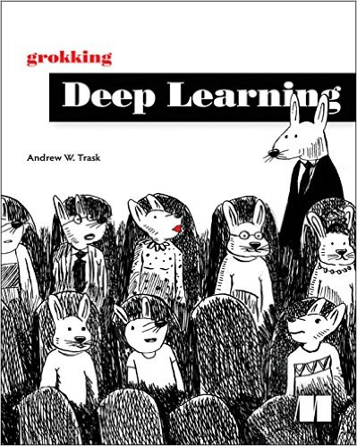

Books to read
We believe that you learn best when you are exposed to multiple perspectives on the same idea. As such, we recommend checking out a few of the books below to get an added perspective on Deep Learning.
- Grokking Deep Learning by Andrew Trask. Use our exclusive discount code traskud17 for 40% off. This provides a very gentle introduction to Deep Learning and covers the intuition more than the theory.
- Neural Networks And Deep Learning by Michael Nielsen. This book is more rigorous than Grokking Deep Learning and includes a lot of fun, interactive visualizations to play with.
- The Deep Learning Textbook from Ian Goodfellow, Yoshua Bengio, and Aaron Courville. This online book contains a lot of material and is the most rigorous of the three books suggested.